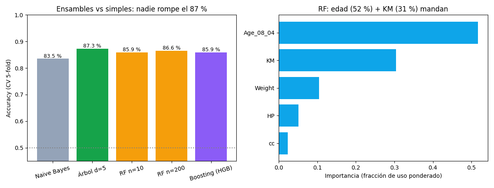

Unidad 8 · Clasificación · Lección 0036
Random forest y boosting: bosques que votan y corrigen
Win de hoy: si un árbol memoriza (lección 0035), un bosque promedia el ruido… aunque acá el bosque (86,6 %) no supera al árbol d=5 (87,3 %): lección honesta incluida.
1 · Random forest: democracia de árboles
Cada árbol se entrena con una muestra bootstrap (filas al azar con reemplazo) y en cada pregunta mira solo algunas variables al azar. Resultado: 200 árboles distintos y mediocres que votan. El voto promedia los caprichos de cada uno: menos varianza, menos memorización. Lo mismo vale para bagging en general (el bosque es bagging de árboles).
2 · Boosting: corregir al anterior, en serie
El
boosting
hace lo opuesto: árboles chiquitos en serie, donde cada uno se concentra en los autos que el anterior clasificó mal
(usamos HistGradientBoosting, la versión rápida de sklearn). Si bagging es «muchos jurados votan»,
boosting es «un equipo que corrige sus borradores». Los integrantes famosos de la familia son
AdaBoost
(repondera casos) y
XGBoost
(boosting por gradiente optimizado, primo del HGB que usamos acá).

La lección incómoda: más complejo ≠ mejor. Con 5 variables y señal simple, un árbol podado empata con 200 árboles. Los ensambles brillan con muchas variables ruidosas e interacciones; acá el techo es del problema (~87 %), no del algoritmo: k-NN, logística y árbol ya lo tocan.
Regenerar la figura (mismo resultado versionado en assets/img/toyota/):
python scripts/make_figures.py --only random-forest-boosting3 · Importancias: el ranking que coincide con todo
El bosque vota cuántas veces (y con cuánto peso) usó cada variable:
edad 52 %, KM 31 %, peso 10 %, HP 5 %, cc 2 %. Comparemos con lo que ya sabíamos:
logística (lección 0034) decía edad −3,30 / KM −0,98 / cc ≈ 0;
el árbol preguntaba edad primero; los filtros U5 rankeaban igual. Cuatro métodos, un ranking:
cuando todo coincide, la señal es real.
4 · Bosque en 10 líneas (reproducí 86,6 %)
import pandas as pd
from sklearn.ensemble import RandomForestClassifier
from sklearn.model_selection import cross_val_score, StratifiedKFold
df = pd.read_csv("../ToyotaCorolla.csv")
cols = ["Age_08_04","KM","HP","cc","Weight"]
X, y = df[cols].values, (df["Price"] > 9900).astype(int).values
cv = StratifiedKFold(5, shuffle=True, random_state=42)
print(cross_val_score(RandomForestClassifier(200, random_state=42),
X, y, cv=cv).mean().round(4)) # 0.8656
m = RandomForestClassifier(200, random_state=42).fit(X, y)
print(pd.Series(m.feature_importances_, index=cols).round(3).sort_values())Tu turno: probá n_estimators=10 vs 200:
85,9 % vs 86,6 %. Más árboles estabilizan (menos lotería entre corridas) pero no rompen el techo.
5 · Quiz (auto-chequeo inmediato)
6 · Fuente primaria y cierre
Para profundizar (1 fuente): James et al., An Introduction to Statistical Learning — cap. 8.2 (bagging, RF, boosting). Más contexto en RESOURCES.
Siguiente: 0037 · SVM y comparación final: la frontera de máximo margen y el torneo de los 7 algoritmos.